Hello, I'm Zihong (Tony) Wang
Thanks for stopping by! I’m a Software Engineer with a background in large-scale secure systems. I enjoy bridging hardware and software, collaborating with diverse teams, and shipping products that make an impact. I’m currently searching for full-time technical positions.
Experience
July 2022 – Dec 2024, Bellevue WA
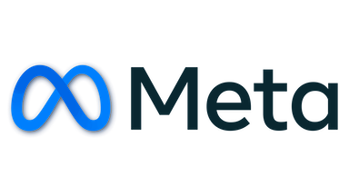
Worked on full stack features, infrastructure, and internal tooling to safeguard the integrity of millions of Reality Lab devices throughout their life cycle. Closely collaborated with stakeholders in security consulting, research, manufacturing processes.
- Protected authentication and telemetry for millions of Quest devices by updating cryptographic signing infrastructure across Qualcomm TrustZone (C), Android system services (Java), backend APIs (Hack) and services (C++).
- Mitigated hardware theft and IP risks on tens of thousands of development devices by engineering a secure unlock token system across Qualcomm PBL (C), backend, and internal tooling (Hack).
- Streamlined cross-team collaboration as the primary technical liaison between device security and internal tooling teams, executing codebase migrations (JavaScript to TypeScript) and authoring key engineering documentation.
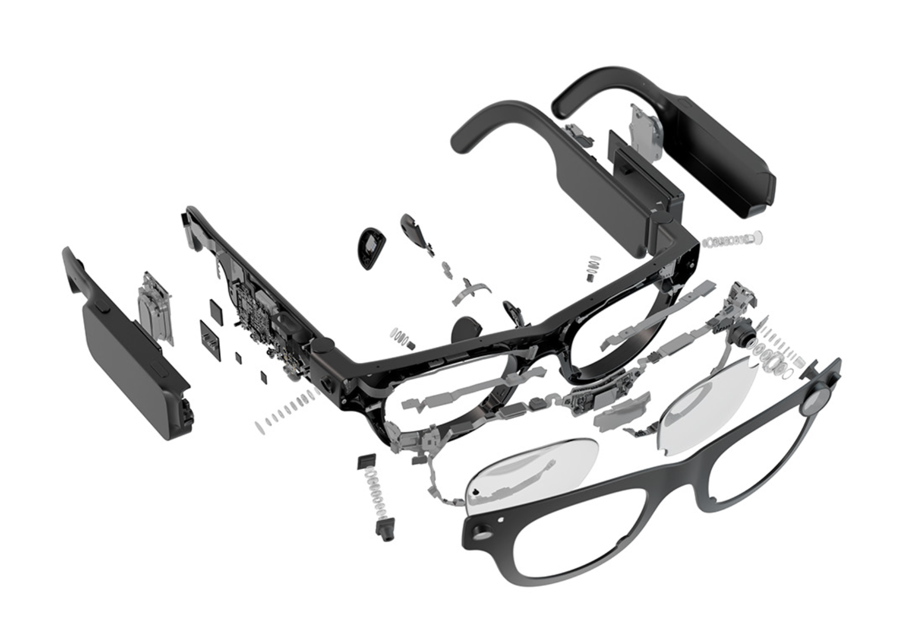
Project Aria 2
(device security liason)
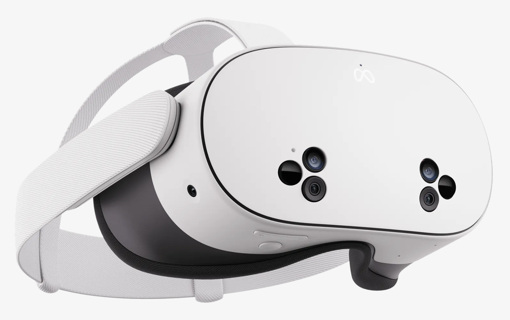
Quest 3S
(security features)
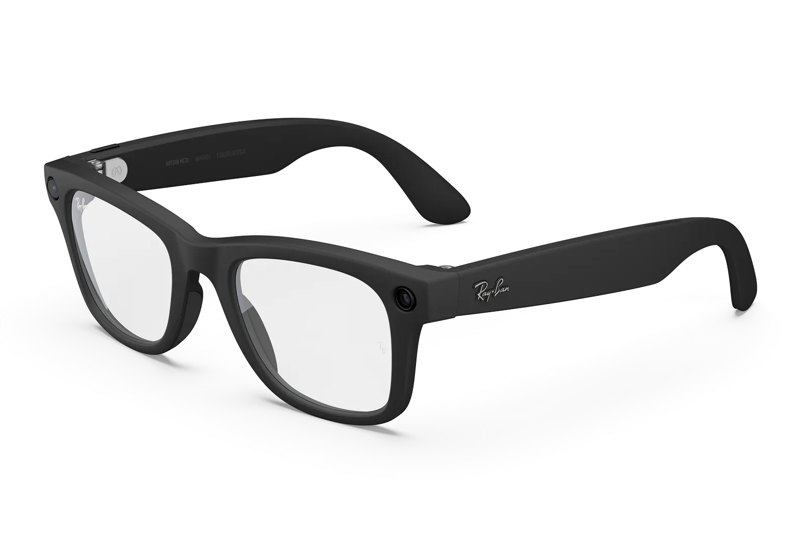
Ray-Ban meta gen 2
(security features)
Supported a team of brilliant mechanical engineers exploring the possibilities of digital manufacturing and food science , working on every aspect of the project including software, electronics, and hardware.
- Revived a stalled research project and unblocked researchers generating 3D printing files (G-code) by containerizing and overhauling legacy slicing software (Python, Docker, Slic3r/PrusaSlicer).
- Enabled the research initiative on novel form factor 3D printing by designing and implementing G-code generation software (Python) and integrating servo motors with the Duet control board. Project GitHub
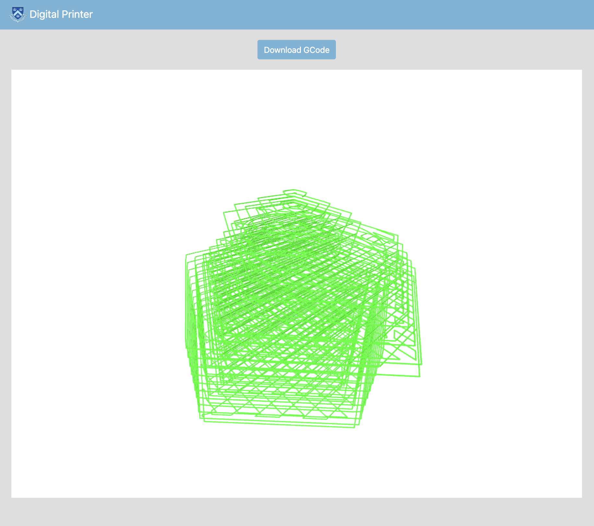
Updating slicing software
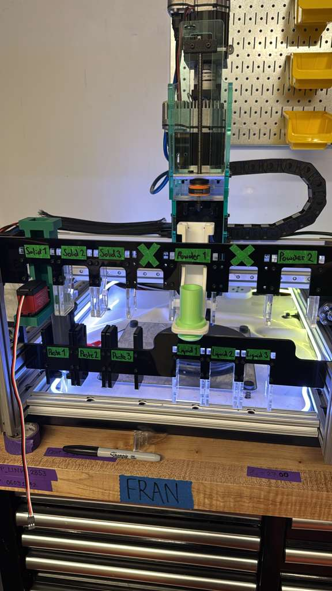
Rebuilding and updating printer
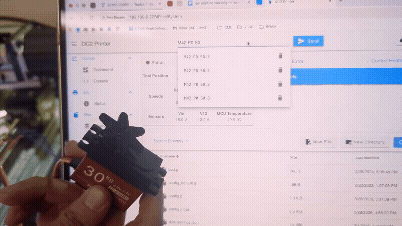
Experimenting servo control with Duet 6XD board
July 2021 – Sept 2021 & July 2021 – Sept 2021, Seattle, WA
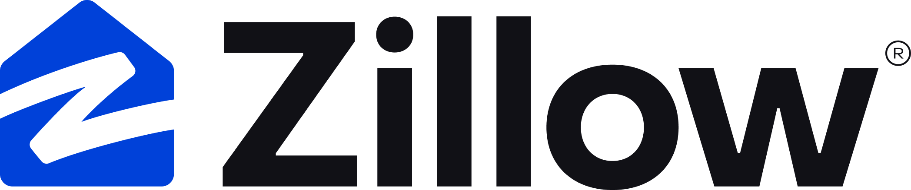
- Improved profile management capabilities for property and business owners by designing and implementing a new backend API and data model, and porting profile updates across web and mobile applications.
- Improved renter onboarding experience by building new first-time user flows on iOS (Swift), integrating preference selection and filtering to personalize search results from first use.
Education
Sept 2025 – (Expected) Dec 2026, New York, NY
GPA: 4.12
Sept 2018 – June 2022, Seattle, WA
GPA: 3.79
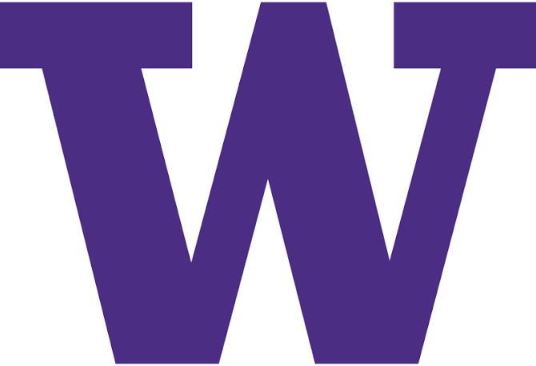
Other
Outside the professional life, I...
- Sing bass in choirs (UW Glee Club, Stanford community choir, and TC community choir)
- Travel and explore (24 national parks and coutning)
- Learn French (Merci de visiter mon site!)
- Read (Most recently finished: The Four Loves by C.S Lewis)
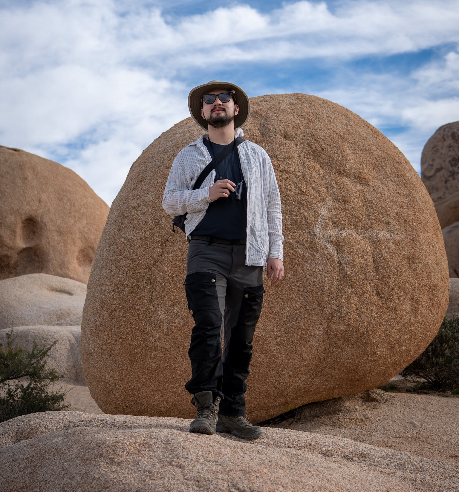
RV trip with best friends to Joshua Tree, 2025
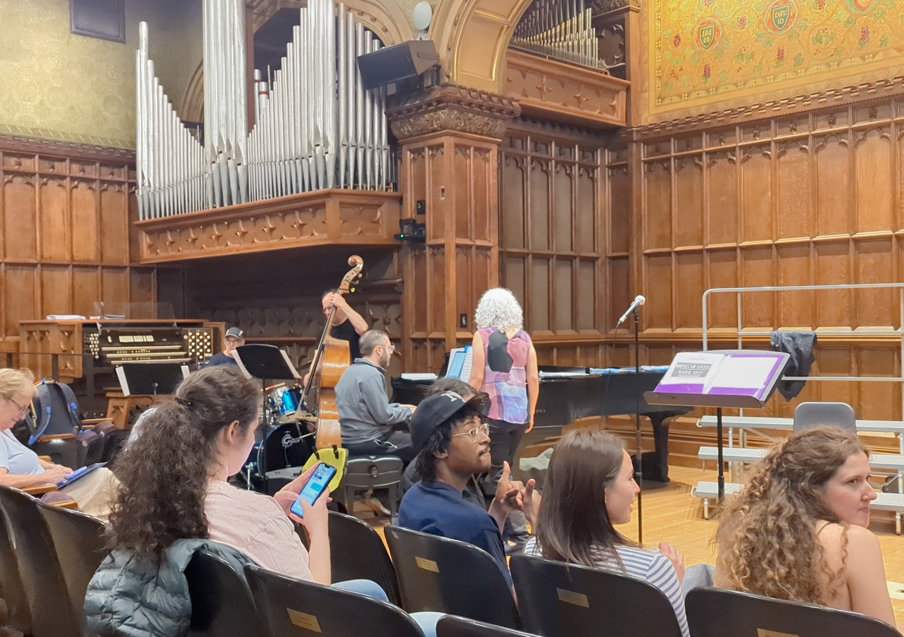
Choir rehearsal before performance, 2025
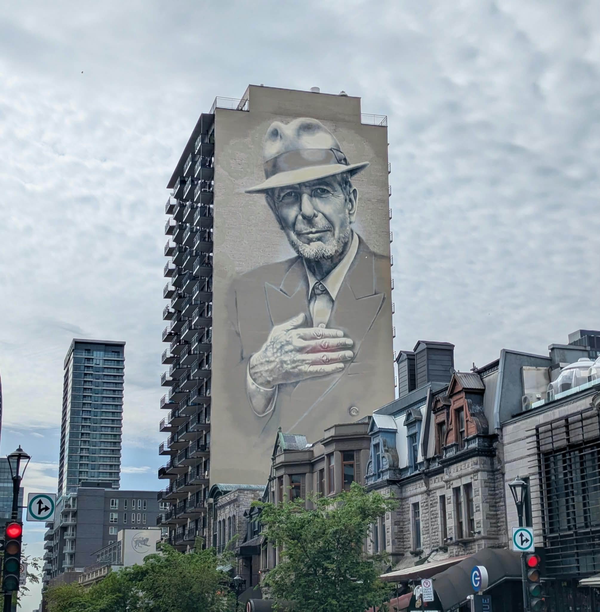